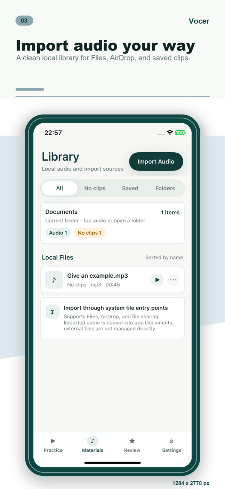
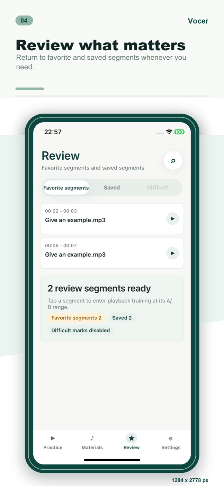
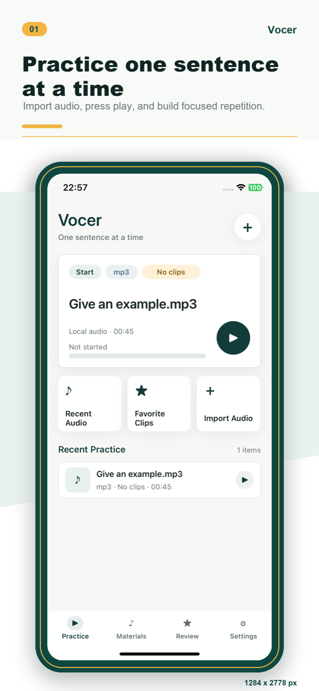
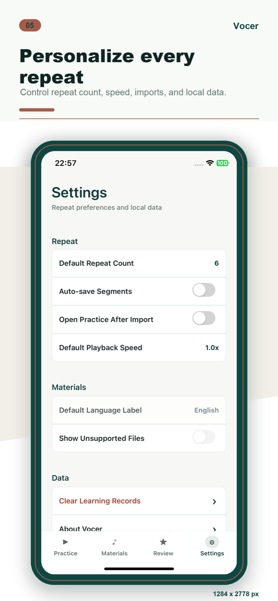

Local audio practice
句练
把一段音频拆成真正能练会的句子。导入本地音频，设置 A/B 片段，慢速复读，收藏关键句，再回到复习列表里反复打磨。
本地音频
A/B 复读
收藏复习
可关闭分析



Practice flow
从导入到复习，围绕一句话完成闭环。
句练不把你带进复杂学习系统，只把本地音频训练这件事做清楚：找到一句、重复一句、保存一句、回看一句。
01 Practice
逐句听说训练
打开音频后，从当前句子开始练。播放、暂停、回退和继续练习都围绕同一个训练现场，不需要在文件列表和播放器之间来回找。
- 继续最近练习，减少重新查找时间。
- 适合听写、跟读、影子练习和精听。

02 Loop
A/B 片段复读
把难句的开始和结束点标出来，只重复那一小段。可以调整速度和复读次数，让耳朵真正跟上细节。
- 精确复读短句、连读、停顿和语调。
- 保存片段后，下次直接回到重点。
03 Library
本地素材库
从 Files、AirDrop 或文件共享导入音频，整理成自己的训练材料。素材以本地库为中心，不把应用变成杂乱的文件浏览器。
- 本地导入，本地管理。
- 保留音频、片段和练习记录之间的连接。
04 Review
收藏片段复习
把真正值得反复练的片段留下来。复习页帮你回到收藏和保存的句段，而不是重新听完整音频找重点。
- 收藏片段和保存片段集中复习。
- 让复读训练从一次播放变成持续积累。
05 Settings
复读习惯自己定
默认复读次数、播放速度、导入后是否直接练习、本地记录清理和分析开关，都放在设置里清清楚楚。
- 控制复读次数、倍速和导入行为。
- 可以清除学习记录，也可以关闭产品分析。

Local-first privacy
训练材料主要留在你的设备里。
句练的核心数据围绕本地音频、播放进度、A/B 标记、收藏片段和复习记录展开。产品分析只用于理解功能是否顺畅，并过滤音频内容、文件名、完整路径和原始搜索词。
不上传音频内容
导入的音频用于本地播放、复读和波形训练。
本地学习记录
播放进度、片段和收藏主要保存在设备内。
可关闭分析
设置里可以停止后续产品分析事件发送。
Ready to practice
从下一句开始。
下载句练，把你已经拥有的音频变成可以反复打磨的听说训练材料。